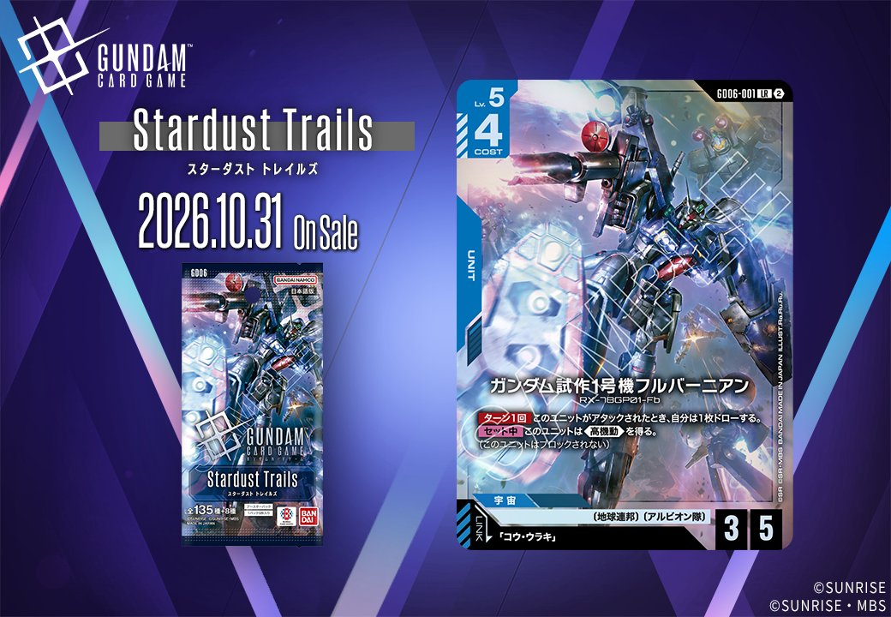
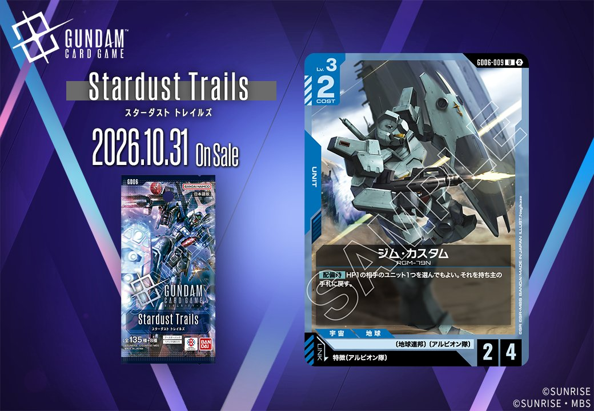
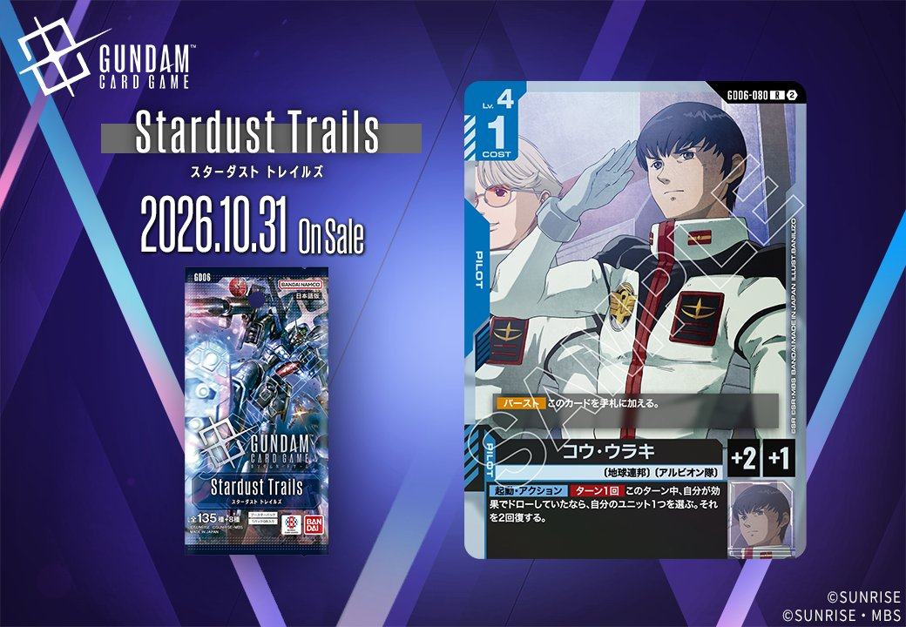
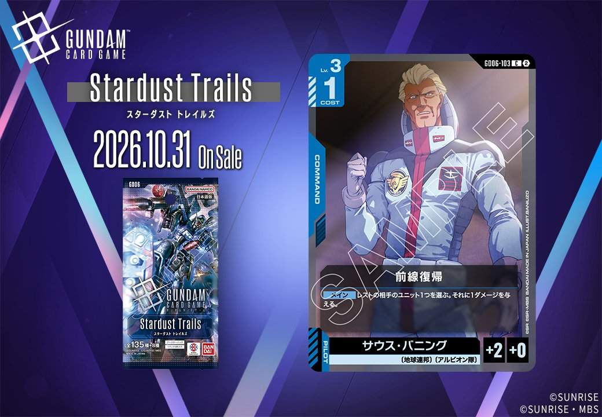

Stardust Trailsから、青のカード3枚が公開されました。内訳はUNIT2枚とPILOT1枚で、同日公開のUNITとPILOTがリンクで結ばれる組合せになっています。UNIT「ガンダム試作1号機フルバーニアン」(GD06-001)とUNIT「ジム・カスタム」(GD06-009)は、どちらもPILOT「コウ・ウラキ」(GD06-080)とリンク条件が成立します。条件の指定方法は異なり、一方は「コウ・ウラキ」をカード名で、もう一方は特徴にアルビオン隊を持つPILOTを指定しているため、PILOT1枚で2種類のUNITのリンク相手をまかなえる構成です。

ガンダム試作1号機フルバーニアン (GD06-001)
| 色 | 青 | タイプ | UNIT |
| Lv | 5 | コスト | 4 |
| AP | 3 | HP | 5 |
| 特徴 | 〔地球連邦〕、〔アルビオン隊〕 | ||
| リンク条件 | 「コウ・ウラキ」 | ||
効果: 【ターン1回】このユニットがアタックされたとき、自分は1枚ドローする。【セット中】このユニットは《高機動》を得る。(このユニットはブロックされない)
ガンダム試作1号機フルバーニアンは、Lv.5・コスト4でAP3/HP5の青のユニットです。アタックされたときに【ターン1回】で1枚ドローでき、HP5の耐久と合わせて相手のアタックを受け止めやすい性能になっています。【セット中】は《高機動》を得てブロックされなくなるため、パイロットを乗せると攻め手としても使えます。リンク先の「コウ・ウラキ」は、そのターン中に効果でドローしていれば【起動・アクション】で自分のユニット1つを2回復できるパイロットです。このユニットがアタックされてドローすれば、そのターンの回復条件を満たせます。


ジム・カスタム (GD06-009)
| 色 | 青 | タイプ | UNIT |
| Lv | 3 | コスト | 2 |
| AP | 2 | HP | 4 |
| 特徴 | 〔地球連邦〕、〔アルビオン隊〕 | ||
| リンク条件 | 特徴にアルビオン隊を持つPILOT | ||
効果: 【配備時】HP1の相手のユニット1つを選んでもよい。それを持ち主の手札に戻す。
ジム・カスタムはLv.3、コスト2でAP2/HP4のユニットです。【配備時】にHP1の相手ユニット1つを持ち主の手札に戻せます。「選んでもよい」とあるため、対象がいなければ使わずに済み、効果が無駄になる心配はありません。相手の場にHP1のユニットがいる場面で、除去として働きます。リンク条件は特徴にアルビオン隊を持つパイロットで、同日公開のコウ・ウラキがこれに該当します。コウ・ウラキの【起動・アクション】は、そのターンに自分が効果でドローしていれば自分のユニット1つを2回復するもので、HP4のこのカードを場に残す手段として相性は良いでしょう。


コウ・ウラキ (GD06-080)
| 色 | 青 | タイプ | PILOT |
| Lv | 4 | コスト | 1 |
| 補正 AP | 2 | 補正 HP | 1 |
| 特徴 | 〔地球連邦〕、〔アルビオン隊〕 | ||
効果: 【バースト】このカードを手札に加える。【起動・アクション】【ターン1回】このターン中、自分が効果でドローしていたなら、自分のユニット1つを選ぶ。それを2回復する。
コウ・ウラキはLv.4・コスト1、AP2/HP1のパイロットです。【バースト】で手札に加わる点はアムロ・レイ(ST01-010)と共通しています。主な効果は【起動・アクション】で、そのターンに自分が効果でドローしていれば、自分のユニット1つを2回復できます。この条件を満たしやすいのが、リンク相手のガンダム試作1号機フルバーニアンになります。アタックされたときに【ターン1回】で1枚ドローするため、相手ターンに条件がそろい、同じターン中に回復を使えます。【セット中】の《高機動》もリンク先に常駐します。効果によるドローがないターンは回復できない点に注意が必要でしょう。
関連カード
-
 アムロ・レイ(ST01-010)青系デッキ内採用率46.1% (3417デッキ)
アムロ・レイ(ST01-010)青系デッキ内採用率46.1% (3417デッキ) -
 ガンダム(ST01-001)青系デッキ内採用率43.3% (3208デッキ)
ガンダム(ST01-001)青系デッキ内採用率43.3% (3208デッキ) -
 ガンタンク(GD01-008)青系デッキ内採用率30.5% (2264デッキ)
ガンタンク(GD01-008)青系デッキ内採用率30.5% (2264デッキ) -
 リゼル(GD01-018)青系デッキ内採用率20.6% (1526デッキ)
リゼル(GD01-018)青系デッキ内採用率20.6% (1526デッキ) -
 アンクシャ(GD01-020)青系デッキ内採用率18.2% (1346デッキ)
アンクシャ(GD01-020)青系デッキ内採用率18.2% (1346デッキ) -
コウ・ウラキ(GD06-080)NEW青系 — リンク先（新カード）
-

前線復帰(GD06-103)NEW青系 — リンク対象（アルビオン隊 PILOT）（新カード） -
 堅実な支援(GD06-104)NEW青系 — リンク対象（アルビオン隊 PILOT）（新カード）
堅実な支援(GD06-104)NEW青系 — リンク対象（アルビオン隊 PILOT）（新カード）